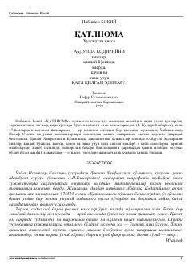

QAbdulla Qodiriyning fojiali qismati va 1937-yil qatag'onlari haqidagi hujjatli qissa.
Ushbu hujjatli qissa o'zbek adabiyotining yirik namoyandasi Abdulla Qodiriyning fojiali qismati va 1937-yillardagi qatag'on davri haqida hikoya qiladi. Muallif Davlat Xavfsizlik Qo'mitasi arxivlaridagi maxfiy hujjatlar va tarixiy manbalarga tayanib, adibning qanday sharoitda va nima uchun qatl etilganini tahlil qiladi.